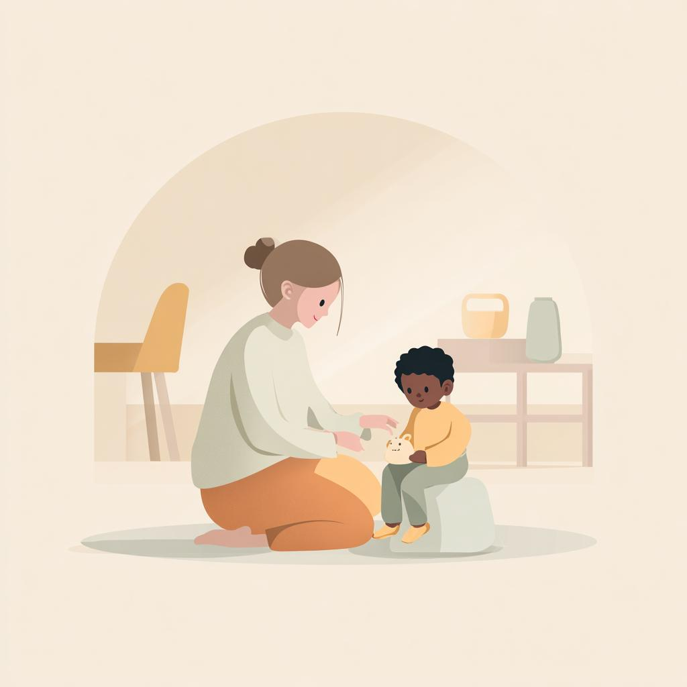

Juan Matheus
ÍNICIO

Este projeto foi desenvolvido com foco em psicologia infantil e acolhimento digital, abordando o crescimento da ansiedade na infância no Brasil. A proposta da clínica foi criar um ambiente online acolhedor, informativo e acessível para crianças, responsáveis e profissionais.
A equipe trabalhou conceitos de HTML5, CSS3, responsividade, acessibilidade digital e organização semântica das páginas, buscando transmitir conforto e confiança através de cores suaves, tipografia amigável e navegação intuitiva.
O site conta com páginas de atuação, agendamento, pesquisas e informações institucionais. A página “Sobre” apresenta a proposta do projeto, a importância do tema e a participação da equipe no desenvolvimento. Além de ser um projeto acadêmico, o trabalho simula um ambiente real do mercado de tecnologia, incentivando trabalho em equipe, visão de produto e desenvolvimento com foco no usuário.
Responsável pela coordenação estratégica e criação do repositório. Desenvolvimento da página 'INICIAL', junto a estrutura e padrão que foi seguido no projeto .
Responsável pelo desenvolvimento e idelização do tema do projeto. Desenvolvimento da página 'SOBRE', e apresentar o objetivo junto a contribuição de cada membro da equipe.
Responsável pela organização e levantamento de dados reais do tema do projeto. Desenvolvimento da página 'PESQUISAS', noticias e alertas sobre a importancia da psicologia infantil.
Responsavel pela acessibilidade e resposividade do projeto. Desenvolvimento da página 'AGENDAR CONSULTAS', formulário para recolher dados de contato e informações sobre o paciente e responsáveis.
Responsavel por recolher dados e informações reais sobre atuação e serviços voltados ao tema. Desenvolvimento da página 'ATUAÇÃO', informações sobre os serviços oferecidos pela clínica.
Integrantes: